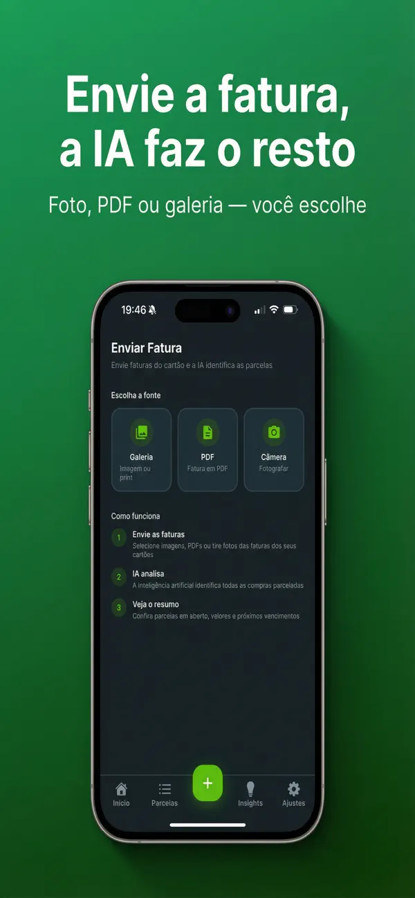

Onde ficam as compras parceladas no app do Nubank
Se você quer saber como ver compras parceladas no Nubank, a resposta está na fatura do cartão de crédito, dentro do próprio app. O caminho é simples:
- Abra o app do Nubank e desbloqueie sua conta.
- Na tela inicial, toque na área do cartão de crédito — onde aparece o valor da fatura atual.
- Abra a fatura atual e role a lista de lançamentos.
- As compras parceladas aparecem junto com as demais, com a indicação da parcela ao lado do nome da loja — algo como 3/10 (terceira de dez).
O Nubank atualiza a interface com frequência, então o nome exato de cada botão pode mudar. A lógica, porém, se mantém: área do cartão → fatura atual → lista de lançamentos. Para meses anteriores ou seguintes, procure o resumo de faturas nessa mesma área: dá para navegar entre faturas fechadas e conferir em quais meses as próximas parcelas vão cair.
Como ver quantas parcelas faltam em cada compra no Nubank
Para saber quanto falta pagar das compras parceladas no Nubank, toque em qualquer compra parcelada dentro da fatura. A tela de detalhes mostra o valor da parcela e em qual parcela você está. A partir daí, a conta é direta: multiplique o valor da parcela pelas que ainda restam e você tem o saldo daquela compra.
Nessa mesma tela de detalhes, o Nubank oferece a opção de antecipar parcelas com desconto: as parcelas escolhidas são puxadas para a fatura atual e você paga menos do que pagaria esperando os meses seguintes.
💡 Dica: a antecipação de parcelas no Nubank não pode ser desfeita depois de confirmada. Antes de aceitar o desconto, confira se a fatura atual não vai ficar pesada demais.
O que o app do Nubank não mostra é o total que você ainda deve somando todas as compras parceladas. Para enxergar esse número, você precisa abrir compra por compra e somar por conta própria — ou usar uma das alternativas que mostramos mais abaixo.
Como baixar a fatura do Nubank em PDF
O PDF é útil para arquivar, conferir lançamentos com calma ou importar em outra ferramenta. Dois caminhos:
- Por e-mail: o Nubank envia a fatura em PDF automaticamente todo mês, no fechamento. Procure na sua caixa de entrada por mensagens do Nubank sobre a fatura fechada do cartão.
- Pelo app: na área do cartão de crédito, acesse o resumo ou histórico de faturas, escolha uma fatura fechada e procure a opção de gerar a segunda via ou receber o PDF. Faturas em aberto ainda não geram PDF — só depois do fechamento.
Diferente do que acontece em alguns bancos, o PDF do Nubank normalmente abre sem senha. Se você também usa outros cartões, o nosso guia de como ver compras parceladas no cartão explica as particularidades de cada banco.
A limitação: o Nubank só mostra o Nubank
Até aqui, tudo resolvido — desde que o roxinho seja seu único cartão. O problema começa quando você também parcela no Inter, no C6 ou em qualquer outro: cada app mostra apenas as próprias parcelas, e nenhum deles responde às perguntas que realmente importam no fim do mês:
- Quanto eu ainda devo em parcelas, somando todos os cartões?
- Quanto vou pagar de parcelas no próximo mês, no total?
- Quando termina a última parcela — em que mês eu fico livre?
Esse é o buraco de quem usa mais de um cartão. No nosso guia de como ver compras parceladas no cartão de crédito, mostramos o caminho dentro de cada banco — mas a visão consolidada, nenhum app de banco entrega.
Deixe a IA organizar suas parcelas
Tire uma foto da fatura e o Parceladinho mostra quanto falta pagar, parcela por parcela. Teste grátis por 3 dias.
Como juntar as parcelas do Nubank com as dos seus outros cartões
Existem três jeitos de organizar as parcelas do Nubank junto com as dos demais cartões, do mais manual ao mais automático:
1. Planilha de controle
Monte uma planilha com uma linha por compra: loja, valor da parcela, parcela atual, total de parcelas, cartão e mês em que termina. Funciona bem e é de graça — o nosso modelo pronto está no guia de planilha de controle de parcelas. O ponto fraco é a disciplina: a cada fatura nova, você precisa lançar as compras novas e dar baixa nas parcelas pagas, cartão por cartão.
2. Apps de orçamento
Apps como Mobills e Organizze são ótimos para orçamento geral — categorias de gastos, metas, contas a pagar. Para parcelas especificamente, porém, o trabalho continua manual: você cadastra cada compra parcelada como despesa recorrente e acompanha mês a mês.
3. Um app dedicado a parcelas
A terceira opção é usar um app para controlar parcelas que faça o trabalho braçal por você: em vez de digitar compra por compra, você envia a fatura de cada cartão e a inteligência artificial monta o painel consolidado sozinha.
Foto ou PDF da fatura: a IA extrai todas as parcelas automaticamente
É exatamente isso que o Parceladinho faz. O fluxo tem três passos:
- Envie a fatura: tire uma foto, escolha uma imagem da galeria ou anexe o PDF da fatura do Nubank (e depois as dos outros cartões).
- A IA identifica as parcelas: loja, valor e parcela atual em relação ao total de cada compra parcelada — sem digitar nada.
- Veja o dashboard: total comprometido em parcelas abertas, quanto você paga no próximo mês e as parcelas separadas por cartão — Nubank, Inter, C6 e o que mais você usar.

Cada compra ganha uma barra de progresso, e o app avisa quando uma parcela está acabando. Na aba de insights, você vê a projeção mês a mês do que ainda vai vencer, a data em que fica livre de parcelas, a maior compra parcelada e a média por parcela. Dá para filtrar por cartão, status ou loja, adicionar parcelas manualmente, editar valores e datas e remover uma compra arrastando. Todo mês, um lembrete avisa a hora de enviar a fatura nova.

Sobre privacidade: o Parceladinho não se conecta ao seu banco. Nada de Open Finance, nada de senha do Nubank — você só envia a imagem ou o PDF, e os dados ficam apenas no seu iPhone. O app é para iOS (iPhone com iOS 15.1 ou superior) e tem nota 5,0 na App Store brasileira. A assinatura Parceladinho Pro tem 3 dias de teste grátis e cancelamento direto na App Store — os planos e valores atuais aparecem direto no app. Se quiser comparar as alternativas antes, veja o nosso comparativo de melhor app para controlar parcelas.
Em resumo: para ver as compras parceladas do Nubank, abra a fatura no app do banco; para ver todas as suas parcelas em um lugar só, uma foto de cada fatura resolve. Conheça o Parceladinho e teste grátis por 3 dias.
Perguntas frequentes sobre parcelas no Nubank
Onde vejo minhas compras parceladas no Nubank?
Na tela inicial do app, entre na área do cartão de crédito e abra a fatura atual. Cada compra parcelada aparece na lista de lançamentos com a parcela atual e o total, algo como 3/10. Toque na compra para abrir os detalhes.
Como saber quanto falta pagar das compras parceladas no Nubank?
Toque na compra parcelada dentro da fatura para ver o valor da parcela e em qual parcela você está. Para saber quanto falta de uma compra, multiplique o valor da parcela pelas que ainda restam. O app não soma o total restante de todas as compras de uma vez; para esse número consolidado, use uma planilha ou um app dedicado como o Parceladinho.
O PDF da fatura do Nubank tem senha?
Normalmente não. O PDF que o Nubank envia por e-mail no fechamento da fatura e o gerado pelo app costumam abrir sem senha. Se algum arquivo pedir senha ou não abrir, gere uma nova via na área de faturas do app.
O Parceladinho se conecta automaticamente ao Nubank?
Não. O Parceladinho não usa Open Finance nem pede senha de banco: você envia uma foto, um print ou o PDF da fatura e a IA identifica cada compra parcelada. Os dados ficam apenas no seu iPhone.